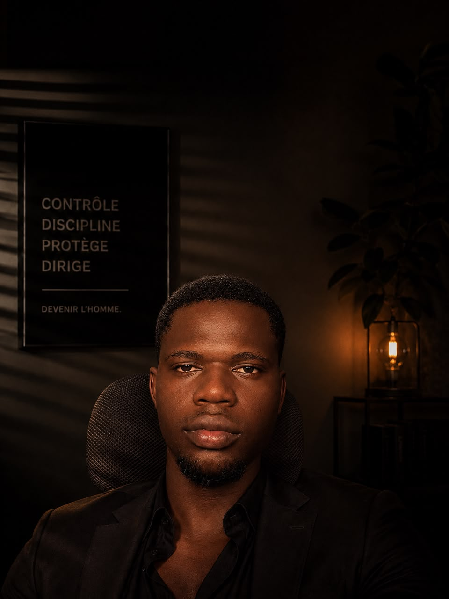

Jude Monsia
Développeur Front-End & UI, closer & créateur d'audience
Mes compétences
Développement Front-end & UI
Passionné par le code et le design. J'adore créer des apps web épurées, fluides et haut de gamme. Pour moi, une belle interface, c'est ce qui donne instantanément confiance à l'utilisateur.
Création d'Audience & Acquisition
Maîtrise des réseaux sociaux et de la création de contenu. Je sais comment capter l'attention des gens, rassembler une communauté active et lancer des projets qui rapportent du cash, même sans montrer mon visage.
Psychologie humaine & Stratégie
Une grande curiosité pour tout ce qui touche à la nature humaine, la théorie des jeux et les mécanismes d'influence. Comprendre comment les gens pensent et réagissent, c'est la base de tout ce que je construis sur internet
Mes expériences
Copywriter — L'Ekip · 7 mois
J'ai bossé comme copywriter chez L'€kip, une agence française de marketing sur LinkedIn. Mon rôle ? Rédiger les contenus de leurs clients pour capter l'attention et vendre leurs offres.
Création de Contenu (X & Telegram) . 1O mois
Je suis parti de zéro et j'ai réuni près 14 000 abonnés sur X et + 1 800 membres sur Telegram en mode faceless. Ça m'a permis de tester mes premières idées de monétisation et de générer des centaines de milliers de FCFA.
Prompt Engineering & Intelligence Artificielle · 2 ans
J'adore l'IA et j'adore créer avec. C'est mon outil numéro un pour décupler ma productivité au quotidien et donner vie à mes projets beaucoup plus vite.
Mes projets
À propos
Je m'appelle Jude Monsia. Né le 7 avril 2004 au Bénin, j'ai choisi de tracer mon propre chemin immédiatement après l'obtention de mon Baccalauréat. Conscient des enjeux de mon avenir et refusant le confort des parcours classiques, j'ai décidé de prendre le taureau par les cornes en me lançant corps et âme dans le business en ligne.
Ma vision est limpide : bâtir la plus grande réussite financière que ma lignée ait jamais connue.
Ma détermination absolue m'a poussé à explorer plusieurs modèles avant de découvrir la puissance du développement web couplé aux agents IA. Depuis ce jour, je suis résolu à devenir une référence incontournable dans cette compétence.
Mon objectif à court terme est clair : créer et déployer mes propres solutions SaaS à l'échelle internationale.